04_USB摄像头驱动程序分析#
参考资料：
内核源码:
drivers\media\usb\uvc\uvc_driver.c
1. 描述符解析#
1.1 内部逻辑结构#
USB摄像头的内部结构如下：

一个USB摄像头必定有一个VideoControl接口，用于控制。有0个或多个VideoStreaming接口，用于传输视频。
在VideoControl内部，有多个Unit或Terminal，上一个Unit或Terminal的数据，流向下一个Unit或Terminal，多个Unit或Terminal组成一个完整的UVC功能设备。
1.2 描述符实例解析#
下载安装：https://www.uwe-sieber.de/usbtreeview_e.html
也可以使用linux工具lsusb。
lsusb -v -d 038f:0541
Bus 001 Device 004: ID 038f:0541
Device Descriptor:
bLength 18
bDescriptorType 1
bcdUSB 2.00
bDeviceClass 239 Miscellaneous Device
bDeviceSubClass 2 ?
bDeviceProtocol 1 Interface Association
bMaxPacketSize0 64
idVendor 0x038f
idProduct 0x0541
bcdDevice 0.04
iManufacturer 1 lihappe8 Corp.
iProduct 2 USB 2.0 Camera
iSerial 0
bNumConfigurations 1
Configuration Descriptor:
bLength 9
bDescriptorType 2
wTotalLength 1096
bNumInterfaces 4
bConfigurationValue 1
iConfiguration 0
bmAttributes 0x80
(Bus Powered)
MaxPower 500mA
Interface Association:
bLength 8
bDescriptorType 11
bFirstInterface 0
bInterfaceCount 2
bFunctionClass 14 Video
bFunctionSubClass 3 Video Interface Collection
bFunctionProtocol 0
iFunction 4 USB 2.0 Camera
Interface Descriptor:
bLength 9
bDescriptorType 4
bInterfaceNumber 0
bAlternateSetting 0
bNumEndpoints 1
bInterfaceClass 14 Video
bInterfaceSubClass 1 Video Control
bInterfaceProtocol 0
iInterface 4 USB 2.0 Camera
VideoControl Interface Descriptor:
bLength 13
bDescriptorType 36
bDescriptorSubtype 1 (HEADER)
bcdUVC 1.00
wTotalLength 79
dwClockFrequency 30.000000MHz
bInCollection 1
baInterfaceNr( 0) 1
VideoControl Interface Descriptor:
bLength 28
bDescriptorType 36
bDescriptorSubtype 6 (EXTENSION_UNIT)
bUnitID 6
guidExtensionCode {b0d0bb68-a461-834b-90b7-a6215f3c4f70}
bNumControl 24
bNrPins 1
baSourceID( 0) 2
bControlSize 3
bmControls( 0) 0xff
bmControls( 1) 0xff
bmControls( 2) 0xff
iExtension 0
VideoControl Interface Descriptor:
bLength 18
bDescriptorType 36
bDescriptorSubtype 2 (INPUT_TERMINAL)
bTerminalID 1
wTerminalType 0x0201 Camera Sensor
bAssocTerminal 0
iTerminal 0
wObjectiveFocalLengthMin 0
wObjectiveFocalLengthMax 0
wOcularFocalLength 0
bControlSize 3
bmControls 0x00000000
VideoControl Interface Descriptor:
bLength 11
bDescriptorType 36
bDescriptorSubtype 5 (PROCESSING_UNIT)
Warning: Descriptor too short
bUnitID 2
bSourceID 1
wMaxMultiplier 0
bControlSize 2
bmControls 0x0000157f
Brightness
Contrast
Hue
Saturation
Sharpness
Gamma
White Balance Temperature
Backlight Compensation
Power Line Frequency
White Balance Temperature, Auto
iProcessing 0
bmVideoStandards 0x 9
None
SECAM - 625/50
VideoControl Interface Descriptor:
bLength 9
bDescriptorType 36
bDescriptorSubtype 3 (OUTPUT_TERMINAL)
bTerminalID 3
wTerminalType 0x0101 USB Streaming
bAssocTerminal 0
bSourceID 2
iTerminal 0
Endpoint Descriptor:
bLength 7
bDescriptorType 5
bEndpointAddress 0x81 EP 1 IN
bmAttributes 3
Transfer Type Interrupt
Synch Type None
Usage Type Data
wMaxPacketSize 0x0010 1x 16 bytes
bInterval 7
Interface Descriptor:
bLength 9
bDescriptorType 4
bInterfaceNumber 1
bAlternateSetting 0
bNumEndpoints 0
bInterfaceClass 14 Video
bInterfaceSubClass 2 Video Streaming
bInterfaceProtocol 0
iInterface 4 USB 2.0 Camera
VideoStreaming Interface Descriptor:
bLength 15
bDescriptorType 36
bDescriptorSubtype 1 (INPUT_HEADER)
bNumFormats 2
wTotalLength 773
bEndPointAddress 130
bmInfo 0
bTerminalLink 3
bStillCaptureMethod 2
bTriggerSupport 1
bTriggerUsage 0
bControlSize 1
bmaControls( 0) 27
bmaControls( 1) 27
VideoStreaming Interface Descriptor:
bLength 27
bDescriptorType 36
bDescriptorSubtype 4 (FORMAT_UNCOMPRESSED)
bFormatIndex 1
bNumFrameDescriptors 8
guidFormat {59555932-0000-1000-8000-00aa00389b71}
bBitsPerPixel 16
bDefaultFrameIndex 1
bAspectRatioX 0
bAspectRatioY 0
bmInterlaceFlags 0x00
Interlaced stream or variable: No
Fields per frame: 2 fields
Field 1 first: No
Field pattern: Field 1 only
bCopyProtect 0
VideoStreaming Interface Descriptor:
bLength 50
bDescriptorType 36
bDescriptorSubtype 5 (FRAME_UNCOMPRESSED)
bFrameIndex 1
bmCapabilities 0x00
Still image unsupported
wWidth 640
wHeight 480
dwMinBitRate 24576000
dwMaxBitRate 147456000
dwMaxVideoFrameBufferSize 614400
dwDefaultFrameInterval 333333
bFrameIntervalType 6
dwFrameInterval( 0) 333333
dwFrameInterval( 1) 400000
dwFrameInterval( 2) 500000
dwFrameInterval( 3) 666666
dwFrameInterval( 4) 1000000
dwFrameInterval( 5) 2000000
VideoStreaming Interface Descriptor:
bLength 50
bDescriptorType 36
bDescriptorSubtype 5 (FRAME_UNCOMPRESSED)
bFrameIndex 2
bmCapabilities 0x00
Still image unsupported
wWidth 160
wHeight 120
dwMinBitRate 1536000
dwMaxBitRate 9216000
dwMaxVideoFrameBufferSize 38400
dwDefaultFrameInterval 333333
bFrameIntervalType 6
dwFrameInterval( 0) 333333
dwFrameInterval( 1) 400000
dwFrameInterval( 2) 500000
dwFrameInterval( 3) 666666
dwFrameInterval( 4) 1000000
dwFrameInterval( 5) 2000000
VideoStreaming Interface Descriptor:
bLength 50
bDescriptorType 36
bDescriptorSubtype 5 (FRAME_UNCOMPRESSED)
bFrameIndex 3
bmCapabilities 0x00
Still image unsupported
wWidth 320
wHeight 240
dwMinBitRate 6144000
dwMaxBitRate 36864000
dwMaxVideoFrameBufferSize 153600
dwDefaultFrameInterval 333333
bFrameIntervalType 6
dwFrameInterval( 0) 333333
dwFrameInterval( 1) 400000
dwFrameInterval( 2) 500000
dwFrameInterval( 3) 666666
dwFrameInterval( 4) 1000000
dwFrameInterval( 5) 2000000
VideoStreaming Interface Descriptor:
bLength 50
bDescriptorType 36
bDescriptorSubtype 5 (FRAME_UNCOMPRESSED)
bFrameIndex 4
bmCapabilities 0x00
Still image unsupported
wWidth 352
wHeight 288
dwMinBitRate 8110080
dwMaxBitRate 48660480
dwMaxVideoFrameBufferSize 202752
dwDefaultFrameInterval 333333
bFrameIntervalType 6
dwFrameInterval( 0) 333333
dwFrameInterval( 1) 400000
dwFrameInterval( 2) 500000
dwFrameInterval( 3) 666666
dwFrameInterval( 4) 1000000
dwFrameInterval( 5) 2000000
VideoStreaming Interface Descriptor:
bLength 38
bDescriptorType 36
bDescriptorSubtype 5 (FRAME_UNCOMPRESSED)
bFrameIndex 5
bmCapabilities 0x00
Still image unsupported
wWidth 800
wHeight 600
dwMinBitRate 38400000
dwMaxBitRate 115200000
dwMaxVideoFrameBufferSize 960000
dwDefaultFrameInterval 666666
bFrameIntervalType 3
dwFrameInterval( 0) 666666
dwFrameInterval( 1) 1000000
dwFrameInterval( 2) 2000000
VideoStreaming Interface Descriptor:
bLength 38
bDescriptorType 36
bDescriptorSubtype 5 (FRAME_UNCOMPRESSED)
bFrameIndex 6
bmCapabilities 0x00
Still image unsupported
wWidth 1280
wHeight 720
dwMinBitRate 73728000
dwMaxBitRate 221184000
dwMaxVideoFrameBufferSize 1843200
dwDefaultFrameInterval 666666
bFrameIntervalType 3
dwFrameInterval( 0) 666666
dwFrameInterval( 1) 1000000
dwFrameInterval( 2) 2000000
VideoStreaming Interface Descriptor:
bLength 38
bDescriptorType 36
bDescriptorSubtype 5 (FRAME_UNCOMPRESSED)
bFrameIndex 7
bmCapabilities 0x00
Still image unsupported
wWidth 1280
wHeight 1024
dwMinBitRate 104857600
dwMaxBitRate 251658240
dwMaxVideoFrameBufferSize 2621440
dwDefaultFrameInterval 833333
bFrameIntervalType 3
dwFrameInterval( 0) 833333
dwFrameInterval( 1) 1000000
dwFrameInterval( 2) 2000000
VideoStreaming Interface Descriptor:
bLength 34
bDescriptorType 36
bDescriptorSubtype 5 (FRAME_UNCOMPRESSED)
bFrameIndex 8
bmCapabilities 0x00
Still image unsupported
wWidth 1600
wHeight 1200
dwMinBitRate 153600000
dwMaxBitRate 276480000
dwMaxVideoFrameBufferSize 3840000
dwDefaultFrameInterval 1111111
bFrameIntervalType 2
dwFrameInterval( 0) 1111111
dwFrameInterval( 1) 2000000
VideoStreaming Interface Descriptor:
bLength 10
bDescriptorType 36
bDescriptorSubtype 3 (STILL_IMAGE_FRAME)
bEndpointAddress 0
bNumImageSizePatterns 1
wWidth( 0) 1600
wHeight( 0) 1200
bNumCompressionPatterns 1
VideoStreaming Interface Descriptor:
bLength 6
bDescriptorType 36
bDescriptorSubtype 13 (COLORFORMAT)
bColorPrimaries 1 (BT.709,sRGB)
bTransferCharacteristics 1 (BT.709)
bMatrixCoefficients 4 (SMPTE 170M (BT.601))
VideoStreaming Interface Descriptor:
bLength 11
bDescriptorType 36
bDescriptorSubtype 6 (FORMAT_MJPEG)
bFormatIndex 2
bNumFrameDescriptors 7
bFlags 1
Fixed-size samples: Yes
bDefaultFrameIndex 1
bAspectRatioX 0
bAspectRatioY 0
bmInterlaceFlags 0x00
Interlaced stream or variable: No
Fields per frame: 1 fields
Field 1 first: No
Field pattern: Field 1 only
bCopyProtect 0
VideoStreaming Interface Descriptor:
bLength 50
bDescriptorType 36
bDescriptorSubtype 7 (FRAME_MJPEG)
bFrameIndex 1
bmCapabilities 0x00
Still image unsupported
wWidth 640
wHeight 480
dwMinBitRate 36864000
dwMaxBitRate 221184000
dwMaxVideoFrameBufferSize 921600
dwDefaultFrameInterval 333333
bFrameIntervalType 6
dwFrameInterval( 0) 333333
dwFrameInterval( 1) 400000
dwFrameInterval( 2) 500000
dwFrameInterval( 3) 666666
dwFrameInterval( 4) 1000000
dwFrameInterval( 5) 2000000
VideoStreaming Interface Descriptor:
bLength 50
bDescriptorType 36
bDescriptorSubtype 7 (FRAME_MJPEG)
bFrameIndex 2
bmCapabilities 0x00
Still image unsupported
wWidth 160
wHeight 120
dwMinBitRate 2304000
dwMaxBitRate 13824000
dwMaxVideoFrameBufferSize 57600
dwDefaultFrameInterval 333333
bFrameIntervalType 6
dwFrameInterval( 0) 333333
dwFrameInterval( 1) 400000
dwFrameInterval( 2) 500000
dwFrameInterval( 3) 666666
dwFrameInterval( 4) 1000000
dwFrameInterval( 5) 2000000
VideoStreaming Interface Descriptor:
bLength 50
bDescriptorType 36
bDescriptorSubtype 7 (FRAME_MJPEG)
bFrameIndex 3
bmCapabilities 0x00
Still image unsupported
wWidth 320
wHeight 240
dwMinBitRate 9216000
dwMaxBitRate 55296000
dwMaxVideoFrameBufferSize 230400
dwDefaultFrameInterval 333333
bFrameIntervalType 6
dwFrameInterval( 0) 333333
dwFrameInterval( 1) 400000
dwFrameInterval( 2) 500000
dwFrameInterval( 3) 666666
dwFrameInterval( 4) 1000000
dwFrameInterval( 5) 2000000
VideoStreaming Interface Descriptor:
bLength 50
bDescriptorType 36
bDescriptorSubtype 7 (FRAME_MJPEG)
bFrameIndex 4
bmCapabilities 0x00
Still image unsupported
wWidth 352
wHeight 288
dwMinBitRate 12165120
dwMaxBitRate 72990720
dwMaxVideoFrameBufferSize 304128
dwDefaultFrameInterval 333333
bFrameIntervalType 6
dwFrameInterval( 0) 333333
dwFrameInterval( 1) 400000
dwFrameInterval( 2) 500000
dwFrameInterval( 3) 666666
dwFrameInterval( 4) 1000000
dwFrameInterval( 5) 2000000
VideoStreaming Interface Descriptor:
bLength 50
bDescriptorType 36
bDescriptorSubtype 7 (FRAME_MJPEG)
bFrameIndex 5
bmCapabilities 0x00
Still image unsupported
wWidth 800
wHeight 600
dwMinBitRate 57600000
dwMaxBitRate 345600000
dwMaxVideoFrameBufferSize 1440000
dwDefaultFrameInterval 333333
bFrameIntervalType 6
dwFrameInterval( 0) 333333
dwFrameInterval( 1) 400000
dwFrameInterval( 2) 500000
dwFrameInterval( 3) 666666
dwFrameInterval( 4) 1000000
dwFrameInterval( 5) 2000000
VideoStreaming Interface Descriptor:
bLength 50
bDescriptorType 36
bDescriptorSubtype 7 (FRAME_MJPEG)
bFrameIndex 6
bmCapabilities 0x00
Still image unsupported
wWidth 1280
wHeight 720
dwMinBitRate 110592000
dwMaxBitRate 663552000
dwMaxVideoFrameBufferSize 2764800
dwDefaultFrameInterval 333333
bFrameIntervalType 6
dwFrameInterval( 0) 333333
dwFrameInterval( 1) 400000
dwFrameInterval( 2) 500000
dwFrameInterval( 3) 666666
dwFrameInterval( 4) 1000000
dwFrameInterval( 5) 2000000
VideoStreaming Interface Descriptor:
bLength 50
bDescriptorType 36
bDescriptorSubtype 7 (FRAME_MJPEG)
bFrameIndex 7
bmCapabilities 0x00
Still image unsupported
wWidth 1280
wHeight 1024
dwMinBitRate 157286400
dwMaxBitRate 943718400
dwMaxVideoFrameBufferSize 3932160
dwDefaultFrameInterval 333333
bFrameIntervalType 6
dwFrameInterval( 0) 333333
dwFrameInterval( 1) 400000
dwFrameInterval( 2) 500000
dwFrameInterval( 3) 666666
dwFrameInterval( 4) 1000000
dwFrameInterval( 5) 2000000
VideoStreaming Interface Descriptor:
bLength 6
bDescriptorType 36
bDescriptorSubtype 13 (COLORFORMAT)
bColorPrimaries 1 (BT.709,sRGB)
bTransferCharacteristics 1 (BT.709)
bMatrixCoefficients 4 (SMPTE 170M (BT.601))
Interface Descriptor:
bLength 9
bDescriptorType 4
bInterfaceNumber 1
bAlternateSetting 1
bNumEndpoints 1
bInterfaceClass 14 Video
bInterfaceSubClass 2 Video Streaming
bInterfaceProtocol 0
iInterface 4 USB 2.0 Camera
Endpoint Descriptor:
bLength 7
bDescriptorType 5
bEndpointAddress 0x82 EP 2 IN
bmAttributes 5
Transfer Type Isochronous
Synch Type Asynchronous
Usage Type Data
wMaxPacketSize 0x1400 3x 1024 bytes
bInterval 1
Interface Descriptor:
bLength 9
bDescriptorType 4
bInterfaceNumber 1
bAlternateSetting 2
bNumEndpoints 1
bInterfaceClass 14 Video
bInterfaceSubClass 2 Video Streaming
bInterfaceProtocol 0
iInterface 4 USB 2.0 Camera
Endpoint Descriptor:
bLength 7
bDescriptorType 5
bEndpointAddress 0x82 EP 2 IN
bmAttributes 5
Transfer Type Isochronous
Synch Type Asynchronous
Usage Type Data
wMaxPacketSize 0x0c00 2x 1024 bytes
bInterval 1
Interface Descriptor:
bLength 9
bDescriptorType 4
bInterfaceNumber 1
bAlternateSetting 3
bNumEndpoints 1
bInterfaceClass 14 Video
bInterfaceSubClass 2 Video Streaming
bInterfaceProtocol 0
iInterface 4 USB 2.0 Camera
Endpoint Descriptor:
bLength 7
bDescriptorType 5
bEndpointAddress 0x82 EP 2 IN
bmAttributes 5
Transfer Type Isochronous
Synch Type Asynchronous
Usage Type Data
wMaxPacketSize 0x0400 1x 1024 bytes
bInterval 1
Interface Descriptor:
bLength 9
bDescriptorType 4
bInterfaceNumber 1
bAlternateSetting 4
bNumEndpoints 1
bInterfaceClass 14 Video
bInterfaceSubClass 2 Video Streaming
bInterfaceProtocol 0
iInterface 4 USB 2.0 Camera
Endpoint Descriptor:
bLength 7
bDescriptorType 5
bEndpointAddress 0x82 EP 2 IN
bmAttributes 5
Transfer Type Isochronous
Synch Type Asynchronous
Usage Type Data
wMaxPacketSize 0x0200 1x 512 bytes
bInterval 1
Interface Association:
bLength 8
bDescriptorType 11
bFirstInterface 2
bInterfaceCount 2
bFunctionClass 1 Audio
bFunctionSubClass 0
bFunctionProtocol 0
iFunction 5 USB Digital Audio
Interface Descriptor:
bLength 9
bDescriptorType 4
bInterfaceNumber 2
bAlternateSetting 0
bNumEndpoints 0
bInterfaceClass 1 Audio
bInterfaceSubClass 1 Control Device
bInterfaceProtocol 0
iInterface 5 USB Digital Audio
AudioControl Interface Descriptor:
bLength 9
bDescriptorType 36
bDescriptorSubtype 1 (HEADER)
bcdADC 1.00
wTotalLength 43
bInCollection 1
baInterfaceNr( 0) 3
AudioControl Interface Descriptor:
bLength 12
bDescriptorType 36
bDescriptorSubtype 2 (INPUT_TERMINAL)
bTerminalID 1
wTerminalType 0x0201 Microphone
bAssocTerminal 0
bNrChannels 2
wChannelConfig 0x0003
Left Front (L)
Right Front (R)
iChannelNames 0
iTerminal 0
AudioControl Interface Descriptor:
bLength 13
bDescriptorType 36
bDescriptorSubtype 6 (FEATURE_UNIT)
bUnitID 5
bSourceID 1
bControlSize 2
bmaControls( 0) 0x01
bmaControls( 0) 0x00
Mute Control
bmaControls( 1) 0x03
bmaControls( 1) 0x00
Mute Control
Volume Control
bmaControls( 2) 0x03
bmaControls( 2) 0x00
Mute Control
Volume Control
iFeature 0
AudioControl Interface Descriptor:
bLength 9
bDescriptorType 36
bDescriptorSubtype 3 (OUTPUT_TERMINAL)
bTerminalID 3
wTerminalType 0x0101 USB Streaming
bAssocTerminal 0
bSourceID 5
iTerminal 0
Interface Descriptor:
bLength 9
bDescriptorType 4
bInterfaceNumber 3
bAlternateSetting 0
bNumEndpoints 0
bInterfaceClass 1 Audio
bInterfaceSubClass 2 Streaming
bInterfaceProtocol 0
iInterface 5 USB Digital Audio
Interface Descriptor:
bLength 9
bDescriptorType 4
bInterfaceNumber 3
bAlternateSetting 1
bNumEndpoints 1
bInterfaceClass 1 Audio
bInterfaceSubClass 2 Streaming
bInterfaceProtocol 0
iInterface 5 USB Digital Audio
AudioStreaming Interface Descriptor:
bLength 7
bDescriptorType 36
bDescriptorSubtype 1 (AS_GENERAL)
bTerminalLink 3
bDelay 1 frames
wFormatTag 1 PCM
AudioStreaming Interface Descriptor:
bLength 32
bDescriptorType 36
bDescriptorSubtype 2 (FORMAT_TYPE)
bFormatType 1 (FORMAT_TYPE_I)
bNrChannels 2
bSubframeSize 2
bBitResolution 16
bSamFreqType 8 Discrete
tSamFreq[ 0] 48000
tSamFreq[ 1] 44100
tSamFreq[ 2] 24000
tSamFreq[ 3] 22050
tSamFreq[ 4] 16000
tSamFreq[ 5] 12000
tSamFreq[ 6] 11025
tSamFreq[ 7] 8000
Endpoint Descriptor:
bLength 9
bDescriptorType 5
bEndpointAddress 0x83 EP 3 IN
bmAttributes 13
Transfer Type Isochronous
Synch Type Synchronous
Usage Type Data
wMaxPacketSize 0x00c8 1x 200 bytes
bInterval 4
bRefresh 0
bSynchAddress 0
AudioControl Endpoint Descriptor:
bLength 7
bDescriptorType 37
bDescriptorSubtype 1 (EP_GENERAL)
bmAttributes 0x01
Sampling Frequency
bLockDelayUnits 1 Milliseconds
wLockDelay 0 Milliseconds
Device Qualifier (for other device speed):
bLength 10
bDescriptorType 6
bcdUSB 2.00
bDeviceClass 239 Miscellaneous Device
bDeviceSubClass 2 ?
bDeviceProtocol 1 Interface Association
bMaxPacketSize0 64
bNumConfigurations 1
Device Status: 0x0000
(Bus Powered)
2. UVC驱动框架#
内核源码: drivers\media\usb\uvc\uvc_driver.c，注册了一个usb_driver，它的id_table表示：它是VideoControl Interface的驱动。在uvc_probe里，再针对VideoStreaming Interface进行处理。
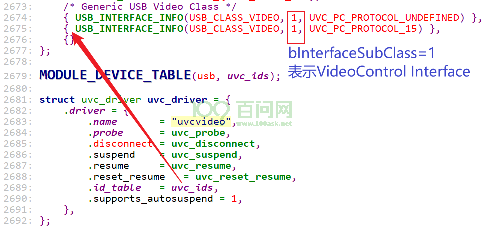
2.1 设备枚举过程#
分析代码：drivers\media\usb\uvc\uvc_driver.c
代码调用过程如下：
uvc_probe
struct uvc_device *dev;
// 创建一个uvc_devcie
if ((dev = kzalloc(sizeof *dev, GFP_KERNEL)) == NULL)
/* Parse the Video Class control descriptor. */
if (uvc_parse_control(dev) < 0)
if ((ret = uvc_parse_standard_control(dev, buffer, buflen)) < 0)
// 1. 解析VideoStreaming Interface
// 1.1 分配对应的uvc_streaming结构体
// 1.2 接续format、format下的frame
// 1.3 加入uvc_device的streams链表：
list_add_tail(&streaming->list, &dev->streams);
// 2.1 解析VideoControl Interface里的每一个entity
// 2.2 分配对应的uvc_entity结构体
// 2.3 加入uvc_device的entities链表
// 初始化v4l2_dev结构体
if (v4l2_device_register(&intf->dev, &dev->vdev) < 0)
// Initialize controls.
// 对于每个entity，初始化它们的control
if (uvc_ctrl_init_device(dev) < 0)
// Scan the device for video chains.
// 从每一个output terminal往回遍历，找到chain上的每个entity
if (uvc_scan_device(dev) < 0)
// 1. 分配uvc_video_chain结构体: chain = uvc_alloc_chain(dev);
// 2. list_add_tail(&chain->list, &dev->chains);
// Register video device nodes.
if (uvc_register_chains(dev) < 0)
// 1. 对于类型为UVC_TT_STREAMING的OT
// 2. 找到对应的uvc_streaming
// 3. ret = uvc_register_video(dev, stream);
// 就是video设备那一套了
UVC跟video的对接：
static int uvc_register_video(struct uvc_device *dev,
struct uvc_streaming *stream)
{
struct video_device *vdev = &stream->vdev;
int ret;
/* Initialize the video buffers queue. */
ret = uvc_queue_init(&stream->queue, stream->type, !uvc_no_drop_param);
if (ret)
return ret;
/* Initialize the streaming interface with default streaming
* parameters.
*/
ret = uvc_video_init(stream);
if (ret < 0) {
uvc_printk(KERN_ERR, "Failed to initialize the device "
"(%d).\n", ret);
return ret;
}
uvc_debugfs_init_stream(stream);
/* Register the device with V4L. */
/* We already hold a reference to dev->udev. The video device will be
* unregistered before the reference is released, so we don't need to
* get another one.
*/
vdev->v4l2_dev = &dev->vdev;
vdev->fops = &uvc_fops;
vdev->ioctl_ops = &uvc_ioctl_ops;
vdev->release = uvc_release;
vdev->prio = &stream->chain->prio;
if (stream->type == V4L2_BUF_TYPE_VIDEO_OUTPUT)
vdev->vfl_dir = VFL_DIR_TX;
strlcpy(vdev->name, dev->name, sizeof vdev->name);
/* Set the driver data before calling video_register_device, otherwise
* uvc_v4l2_open might race us.
*/
video_set_drvdata(vdev, stream);
ret = video_register_device(vdev, VFL_TYPE_GRABBER, -1);
if (ret < 0) {
uvc_printk(KERN_ERR, "Failed to register video device (%d).\n",
ret);
return ret;
}
if (stream->type == V4L2_BUF_TYPE_VIDEO_CAPTURE)
stream->chain->caps |= V4L2_CAP_VIDEO_CAPTURE;
else
stream->chain->caps |= V4L2_CAP_VIDEO_OUTPUT;
atomic_inc(&dev->nstreams);
return 0;
}
2.2 设备控制过程#
以调节亮度为例。
APP：参考GIT仓库
doc_and_source_for_drivers\IMX6ULL\source\13_V4L2\
05_video_brightness\
video_test.c
核心代码为：
struct v4l2_control ctl;
ctl.id = V4L2_CID_BRIGHTNESS; // V4L2_CID_BASE+0;
ctl.value = value;
ioctl(fd, VIDIOC_S_CTRL, &ctl);
上述代码时如何触发驱动程序设置<entity, selector>里寄存器的某些位的？
2.2.1 驱动初始化control的过程#
分析代码：drivers\media\usb\uvc\uvc_driver.c
调用关系：
uvc_probe
uvc_parse_control // 得到PU的entity
uvc_ctrl_init_device // 初始化PU的control
// 从描述符里得到关键数据
bmControls = entity->processing.bmControls; // 比如0x7F, 0x15
bControlSize = entity->processing.bControlSize;
// 根据bmControls分配多个uvc_control结构体
entity->controls = kcalloc(ncontrols, sizeof(*ctrl),
GFP_KERNEL);
// 对于每个control
for (i = 0; i < bControlSize * 8; ++i) {
ctrl->entity = entity;
ctrl->index = i;
uvc_ctrl_init_ctrl(dev, ctrl);
}
uvc_ctrl_init_ctrl就是关键函数：
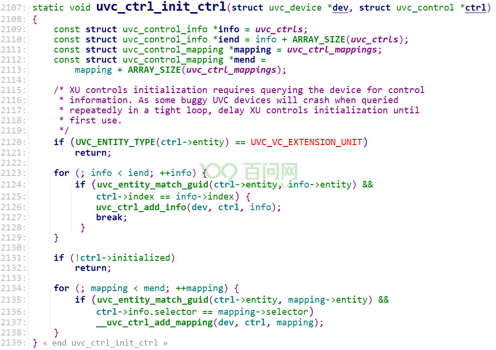
它的结果如下图所示：
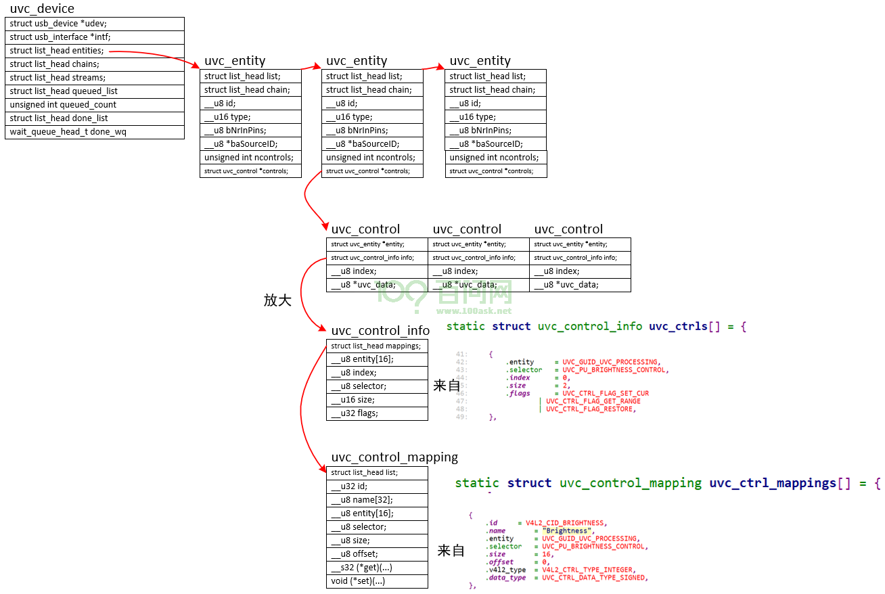
2.2.2 APP设置control的过程#
APP调用ioctl(fd, VIDIOC_S_CTRL, &ctl);，会进入驱动。
进入驱动后，对应函数为：
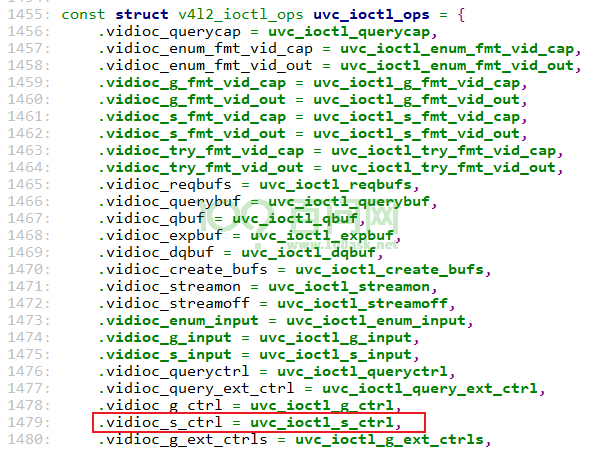
内部流程为：
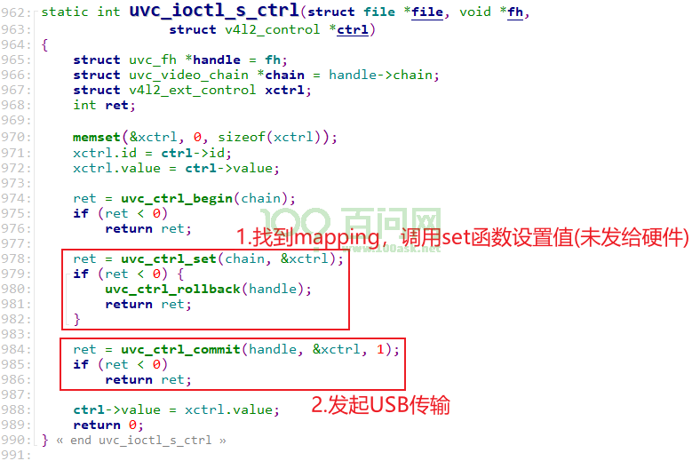
2.3 数据传输过程#
对于摄像头，数据传输时，硬件操作部分由vb2_ops结构体完成。UVC驱动的vb2_ops结构体设置流程如下：
uvc_probe
uvc_register_chains
uvc_register_terms
uvc_register_video
uvc_queue_init
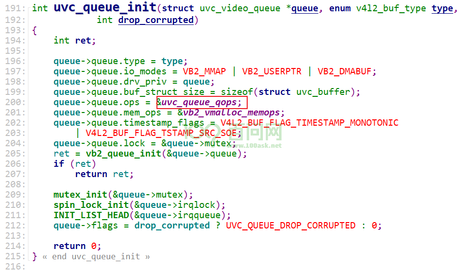
硬件相关的uvc_queue_qops内容在drivers\media\usb\uvc\uvc_queue.c中定义，如下：
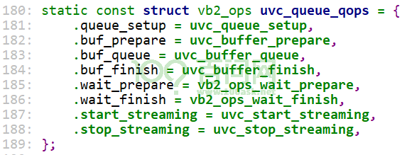
各成员的作用为：
vb2_ops结构体成员 |
作用 |
|---|---|
queue_setup |
APP调用ioctl VIDIOC_REQBUFS或VIDIOC_CREATE_BUFS时， |
wait_prepare |
释放驱动自己的互斥锁 |
wait_finish |
申请驱动自己的互斥锁 |
buf_init |
分配vb2_buffer及它内部存储数据的buffer后，使用buf_init进行驱动相关的初始化 |
buf_prepare |
APP调用ioctl VIDIOC_QBUF或VIDIOC_PREPARE_BUF时，驱动程序会在执行硬件操作前，调用此函数进行必要的初始化。 |
buf_finish |
APP调用ioctl VIDIOC_DQBUF后，在驱动程序返回用户空间之前，会调用此函数，可以在这个函数里修改buffer。或者驱动程序内部停止或暂停streaming时，也会调用此函数。 |
buf_cleanup |
在buffer被释放前调用，驱动程序在这个函数里执行额外的清除工作。 |
start_streaming |
驱动相关的”启动streaming”函数 |
stop_streaming |
驱动相关的”停止streaming”函数 |
buf_queue |
把buffer传送给驱动，驱动获得数据、填充好buffer后会调用vb2_buffer_done函数返还buffer。 |
2.3.1 核心结构体#
在UVC驱动里，每一个buffer的核心仍然是vb2_v4l2_buffer.vb2_buffer，为了便于硬件驱动管理，扩展为uvc_buffer：
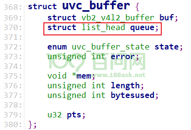
管理buffer的核心仍然是vb2_queue，为例便于硬件驱动管理，扩展为uvc_video_queue：
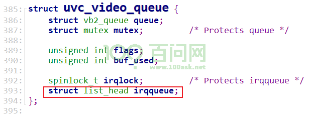
buffer入队列流程：
APP调用ioctl VIDIOC_QBUF
驱动程序根据其index找到vb2_buffer
把这个vb2_buffer放入链表vb2_queue.queued_list
把对应的uvc_buffer放入irqqueue
硬件驱动接收到数据后，比如URB传输完成后：
从链表irqqueue得到、移除uvc_buffer
把硬件数据存入uvc_buffer.vb2_v4l2_buffer.vb2_buffer
把vb2_buffer放入链表vb2_queue.done_list
出队列流程：
APP调用ioctl VIDIOC_DQBUF
驱动程序从链表vb2_queue.done_list取出并移除第1个vb2_buffer
驱动程序也把这个vb2_buffer从链表vb2_queue.queued_list移除
2.3.2 分配buffer#
分配buffer时，queue_setup函数会进行参数判断、调整。
2.3.3 把buffer放入队列#
APP把buffer放入队列时，驱动程序里uvc_buffer_queue被调用，它把buffer放在queue->irqqueue链表里：
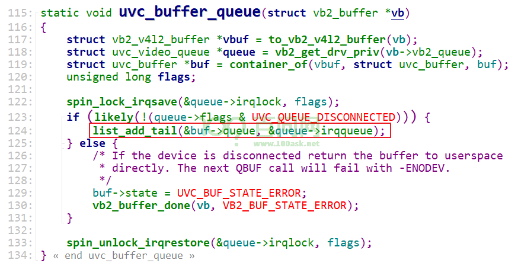
2.3.4 启动摄像头#
提交URB，提交URB的complete函数为uvc_video_complete。调用关系如下：
uvc_start_streaming
ret = uvc_video_enable(stream, 1);
ret = uvc_init_video(stream, GFP_KERNEL);
ret = uvc_init_video_isoc(stream, best_ep, gfp_flags);
urb = usb_alloc_urb(npackets, gfp_flags);
urb->complete = uvc_video_complete;
ret = usb_submit_urb(stream->urb[i], gfp_flags);
2.3.5 URB传输完成#
URB完成后，它的complete函数uvc_video_complete被调用，调用关系为：
uvc_video_complete
stream->decode(urb, stream, buf); // 在uvc_register_video中被设置
uvc_video_decode_isoc
uvc_queue_next_buffer
// 解析数据存入buffer
// 取出下一个buffer
nextbuf = list_first_entry(&queue->irqqueue, struct uvc_buffer, queue);
// 把当前buffer放入done_list
vb2_buffer_done(&buf->buf.vb2_buf, VB2_BUF_STATE_DONE);
函数uvc_video_complete在drivers\media\usb\uvc\uvc_video.c中定义，代码如下：
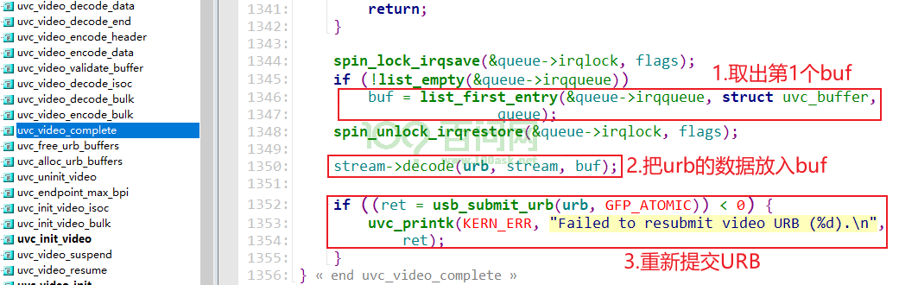
2.3.6 把buffer从队列取出#
常规流程，没什么特殊的：从done_list取出、移除buffer，从queued_list移除buffer。